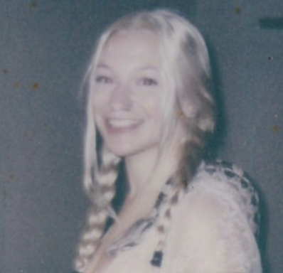

Undergraduate researcher at UC Santa Cruz
I'm a third-year undergraduate at UC Santa Cruz double-majoring in Psychology (Intensive) and Cognitive Science, with a minor in Statistics. I transferred from Cabrillo College, where I earned two associate's degrees and first fell in love with research.
My primary research interests are in social psychology — particularly gender, sexuality, and cultural norms — and the cognitive effects of emerging technology on learning. I presented my research on generative AI and cognition at the Cornell Undergraduate Psychology Conference in April 2026, and I'm continuing to develop that work with a focus on harm reduction.
Outside of school, I train in kickboxing and jiujitsu, make art whenever I can find the time, and go everywhere with my service dog, Nala.